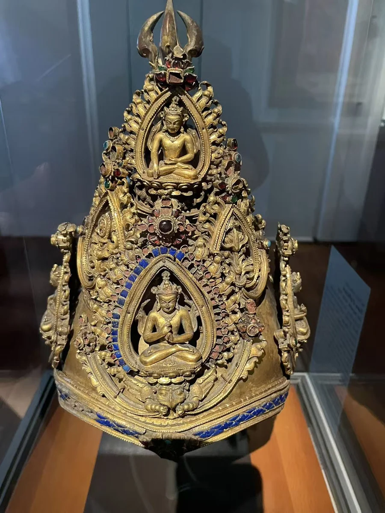

OBJECT NOTE
纪年1145年的仪式法冠
1145年

层层升起的小佛与冠顶金刚杵；蓝色镶嵌周围的细线与镂空。
镶嵌材料依现场法文展签与官网法文页；英文页末项作水晶。铭文与仪式用途详见细读。
作品资料
- 原题名
- Ritual Crown
- 年代
- 1145年
- 材料
- 鎏金铜嵌青金石、石榴石、绿松石及有色玻璃
- 尺寸
- 27.2 × 21.5 × 21.5厘米
- 收藏／展出
- 吉美博物馆
- 馆藏号
- MA 4929
- 地区与传统
- 尼泊尔／加德满都山谷传统（地域归属）
现场资料
基本资料依据现场展签整理。Ritual Crown；馆藏号 MA 4929。
镶嵌材料依现场法文展签与官网法文页；英文页末项作水晶。铭文与仪式用途详见细读。
资料与来源
作品基本资料据现场展签及下列馆方记录整理；文字中的观看描述基于这里的现场照片。